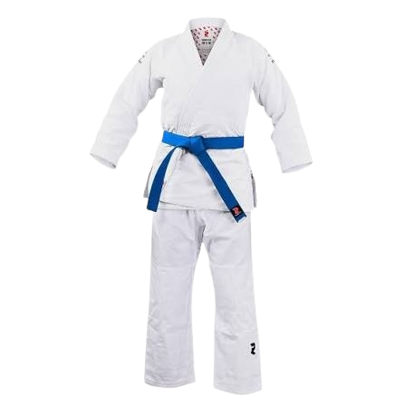
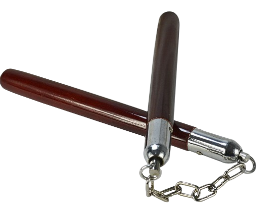

Luvas de Boxe e Bandagens Etc
Essenciais para proteger as mãos e punhos durante o treino e combate.

Guia sobre itens essenciais para treino e defesa como luvas, protetores, sacos de pancada, vestimentas/kimonos.
Confira os principais equipamentos de proteção para treinos e competições:
Essenciais para proteger as mãos e punhos durante o treino e combate.
O kimono é o traje tradicional usado em várias artes marciais, como judô, jiu-jitsu e karatê.
Um traje tradicional usado em várias artes marciais.

Ferramenta utilizada pelos treinadores e alunos para aprimorar potência, precisão, velocidade e grandes combinações de golpes.
Um Saco de Pancada é um equipamento essencial para treinos de artes marciais.

Essa Ferramenta é utilizada em várias artes marciais.
Serve para treinar movimentos e técnicas em artes marciais.
